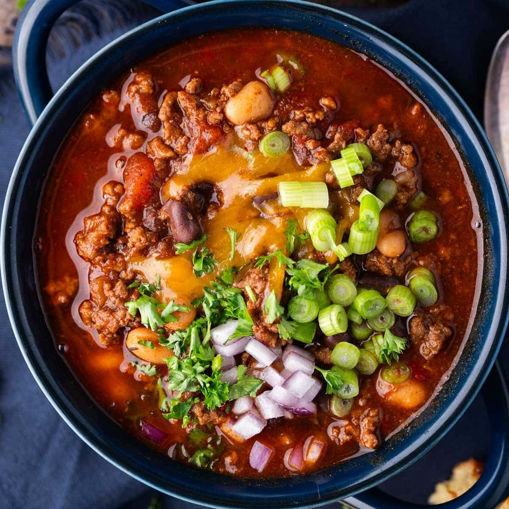

Dank Ass Chili

Why this is dank.
Homemade chili paste. Homemade beef stock. Beef. Beans!
No commie Texans involved with this chili. We're not making a glizzy condiment afterall.
Ingredients
Chili Paste
- 2 pasilla chiles (dried whole)
- 4 arbol chiles (dried whole)
- 4 chipotle chiles (dried whole)
- 3 guajillo chiles (dried whole)
- 3 ancho chiles (dried whole)
- water
Main Shizz
- 2 pounds ground beef
- Olive oil
- 1 white onion, roughly chopped
- 6 cloves garlic, crushed
- 4-6 cups beef stock
- 1 (28oz) can crushed tomatoes
- 1 (14.5oz) can black beans
- 1 (14.5oz) can kidney beans
- 1 (14.5oz) can cannellini beans
- Cinnamon
- Ground allspice
- Ground coriander
- Dried oregano
- Dried thyme
- 2-4 bay leaves
- 2-3 Tbsp tomato paste
- 1-2 limes, juiced
- Shredded cheese, sour cream, etc for garnish
STEPS
- Relieve the dried chilis of their stems and seeds.
- Dry roast chilis in a pan to wake up their aroma.
- Once aromatic, add enough water to cover the chilis and bring to a simmer. Cover with a lid, kill the heat and let steep for around 10 minutes.
- Add chilis and steeping liquid to a blender and blend until smooth.
- Crank a pot up to medium high heat, add some olive oil and once hot, add the ground beef to begin browning.
- Once the meat is browned and a nice fond is on the bottom of the pot, add the onions and deglaze the pan.
- When onions are translucent and the fond is gone, add some tomato paste and cook until the raw tomato flavor disappears (around 1-3 minutes).
- Add the garlic and spices, then sauté until fragrant.
- Add in the crushed tomatoes, beef stock, beans and chili paste. Bring to a simmer and continue simmering until the chili thickens and the flavors meld.
- Squeeze in some lime juice to finish and garnish with whatever your heart desires. I personally dig some cheese and sour cream.